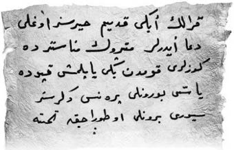

24 Ağustos 1928
Bursa’dan hızla uzaklaştılar. Bursa’nın dışında Bursa Ziraat Mekteb-i Şahanesinde durup öğrencilerin de yardımıyla Ahmet Amcalarının başına pansuman yaptırdılar. Yol boyunca –gemide de– polise yakalanmaktan çok korktular; imam kendilerini şikâyet etmiş olabilirdi. Zafer, Tirilye’den zaptiyelerin arasında, korka korka vapura bindiğinde, “Hayırlısıyla eve varsak kendimi kanun kaçağı gibi hissediyorum” dedi. Zor bir yolculuktan sonra Galata’ya indiler. İnzibatlara görünmemek için ara yolları izleyerek Samatya’ya ulaştılar. Bahçe kapısından içeri girdiklerinde Cimbo neşeyle havlamaya başladı. İkizler koşarak bahçeye indiler, arkalarından Müzeyyen Babaanne. Koşarak üçüne sarıldı, sonra da Ahmet Tevfik oğluna. Gözlerinden yaşlar akıyordu.
— Bu ne hâl çocuklar, üstünüz başınız berbat olmuş.
— Sorma Müzeyyen Anne, pek heyecanlı oldu; çocuklarla beraber maceradan maceraya koştuk. Hatta bu arada bir dua bile öğrendim.
— Ah Tevfik oğlum, senin niyetin olsa ben sana hemen öğretirim duaları ama senin niyetin yok.
— Vallahi en son kafama imamdan bir odun yedim ki camiye zor girerim bundan sonra.
“Hak etmişsindir Tevfik Amca, yoksa niye dövsün imam amca seni” deyince Sanem, hepsi güldü. Neler yaşadıklarını Müzeyyen Babaanne’ye anlattılar.
— Peki, Tevfik Amca, imam seni niye bir anda kovaladı? Aranız da pek iyiydi, diye sordu Zafer.
— Zafer oğlum, ben imamı oyalamaya çalışırken sabah sessizliğinde yukarıdan bizimkilerin çekiç gürültüleri gelmeye başladı, imam efendi de huylandı tabii... Ben de bunun üzerine sesimi yükselterek okumaya başladım duayı. “Ne bağırıyorsun oğlum, efendi efendi okusana, sessiz ol” dedi, o sıra yukarıdan “tak tuk” sesler gelince ben yine bağırıyorum, en son “ilahinnaass” diye bağırınca adam, “Asıl sen sesini kaass” diye enseme bir şaplak indirdi. Normalde yemem o şaplağı ama görevliyiz malum. Baktı ses çıkarmıyorum, adam bana çocuk muamelesi yapmaya başladı. Yanlış okuyorum, şak enseme vuruyor; bir kelimeyi yanlış söylüyorum, şak enseme şaplak. İçimden “Sakin ol oğlum, sakin ol” diyorum. Sonunda konuyu dağıtmak için “Bu merdivenle nereye çıkıyorsunuz?” diye sordum, “Layn! Onun adı merdiven değil, minber” diye enseme geçirince kendimi artık tutamadım. “Benim adım da Tevfik değil, Kamber” dedim ve ensesine sağlam bir tokat geçirdim. Bu başladı beni caminin içinde kovalamaya. Mirim, normalde ben kendimi kovalatmam ama yukarıdaki çocukların sorumluluğu var üzerimde. Havuzun etrafında beş-on tur dönünce artık siz de işinizi tamamlamışsınızdır diye dışarı topukladım.
Simin ve Sanem hikâyeye kahkahalarla gülüyorlardı. “Peki, Tevfik Amca, imam sırılsıklamdı; o niye?” diye sordu Nisan.
— Havuzun etrafında koştururken bir elimle de arkaya hep su attım öcümü almak için, dayakla dua mı öğretilir kırk yaşındaki adama Müzeyyen Babaanne?
Ne zamandır bu kadar güldüğünü hatırlamıyordu.
— Kırk sekiz! Tevfik oğlum, yaşını küçültme, diyebildi.
Nisan,
— Açalım mı artık şu paketi? Heyecandan bütün gece uyumadım.
— Önce etrafı kolaçan etmeliyiz. Hadi Zafer, dedi Erim.
Nisan köşkün alt katına indi, Zafer pencereden dışarıyı kolladı, Erim de odaların pencerelerinden dışarı baktı. Her şey normal görünüyordu. Erim, Nisan’dan dönüş yolunda almış olduğu paketi çıkardı. Açık kahverengi çuval bezinin üzerinde sağlam bir düğüm vardı. Düğümü çözdüler. İçinden, nemden korumak üzere sağlam bir örtüye sarılmış bir mektup çıktı. Üzerinde kırmızı balmumundan bir mühür, mührün üzerinde “L. D. V.” yazısı vardı. Zarfı açtılar:

Canım Oğlum,
Bu, son görev. Niye bu kadar güç olduğunu en sonunda anlayacaksın. Takip edilmediğine emin olmadan sakın harekete geçme. Sayfa 145.
Heyecanla 145. sayfayı açtılar. İşte bir şiir!
Kralın iki kadim hayırsız oğlu
Dua ederler metruk manastırda
Gözleri kumdan yeni yapılmış kapıda
Yassı burunlu prens değersiz
Sivri burunlu oturacak tahta.
Zafer,
— Bu ne azizim? Ben bunu çözsem edebiyat profesörü, âlim olurum âlim!
— Ben de bir şey anlamadım doğrusu, diye mırıldandı Nisan.
— Muhittin Dede’nize gidin, o yol gösterir, dedi Müzeyyen Babaanne.
Çocuklar onayladılar.
— Beybabaya gidelim.
İkizler evde kaldı. Çete üyeleri ve çetenin en yeni fahri üyesi İbnülcemal Ahmet Tevfik, Muhittin Dede’nin imalathanesine doğru yola çıktılar. Deniz kıyısındaki bu yer, onlar için mucize gibiydi. Sürprizler, oyuncaklar, hikâyeler... Sadece bu Arap ortaya çıktığından beri biraz soğumuşlardı.
— İçeri girerken Arap oradaysa renk vermeyelim, dedi Zafer.
Nisan, “Bence koku da vermeyelim” deyince Erim kahkahayı bastı.
— Sanki sen korkmadın adamdan, dedi Zafer.
— Bence adam korktu senden Zafer. Bu boyutlarda bir kokarca görmemiştir hayatında.
Kıkırdayarak Muhittin Dedelerinin yanına geldiler. Muhittin Dede, o güne dek görmedikleri radyo, gramofon arası elektrikli bir cihazla uğraşıyordu.
— Merhaba beybaba!
— Merhaba gençler, nerede kaldınız Allah aşkına! Özlettiniz kendinizi...
— Biz de sizi özledik.
— Yanınıza gelemedim. Çocuklar, sabah bir imam ziyaretime geldi. Camisi soyulmuş. Hırsızları takip ederek buralara kadar gelmiş.
Zafer’in rengi bir anda pembeden kırmızıya, kırmızıdan sarıya, oradan da beyaza geçti. Yerinde bir sallandı bir sendeledi.
— Şaka Zaferciğim, sabah Tevfik Oğlum geldi, maceranızı anlattı; takılayım dedim, diye güldü Muhittin Dede.
— Beybaba bayılacaktım vallahi, yapma Allah aşkına!
— Özür dilerim Zafer’im. Her şey bu Tevfik evladımızın başının altından çıkıyor.
— Beybaba, Arap Bey burada yoksa bir şey danışacaktık, dedi Nisan.
— Yok yavrum, iki gündür yok, akşam gelecek.
Mektubu gösterdiler, ardından Erim kitaptaki şiiri okudu:
— Kralın iki kadim hayırsız oğlu
Dua ederler metruk manastırda
Gözleri kumdan yeni yapılmış kapıda
Yassı burunlu prens değersiz
Sivri burunlu oturacak tahta.
— Size bir yer tarif ediyor, gitmeniz gereken yeri anlatıyor. Neresi olabilir?
— Şiiri birkaç kere okuyalım. Sonra herkes üzerinde düşünsün, dedi Nisan.
Bunu denediler. Üzerinden belki de bir saat geçti. Zafer denizde taş kaydırıyor, Erim bir bıçakla dal parçasını yontuyor, Muhittin Dede cihazıyla uğraşıyor gibi yapıp düşünüyordu. Ahmet Tevfik, Klasik Batı Müziği parçası mırıldanıyor hafiften, Nisan ise kitabın o sayfasını tekrar tekrar okuyordu. Akşam ezanı duyulduğunda hiçbir şey bulamamış hâlde eve döndüler. Yemekte akıllarında hep şiir vardı. Erdoğan Baba ve Osman Hamdi Dede ne anlatmak istemişti acaba?
Zafer,
— Çelebi Mehmet ve diğer padişahlar olabilir mi?
Erim,
— “Kral” demiş, “padişahlar” derdi o zaman.
— Doğru, dedi Zafer.
Nisan,
— Fatih Sultan Mehmet’in bir portresi var. Zanarro diye bir İtalyan ressam yapmış. Bayağı sivri burunlu, o olabilir mi?
— Olabilir, dedi Erim.
— Eğer iki kardeşlerse olabilir. Sabah beybabaya soralım, yassı burunlu bir kardeşi var mı Fatih Sultan Mehmet’in?
— Tamam, gece herkes bulmacayı düşünsün. Sabah kahvaltıda görüşürüz.
Vedalaşıp yattılar.